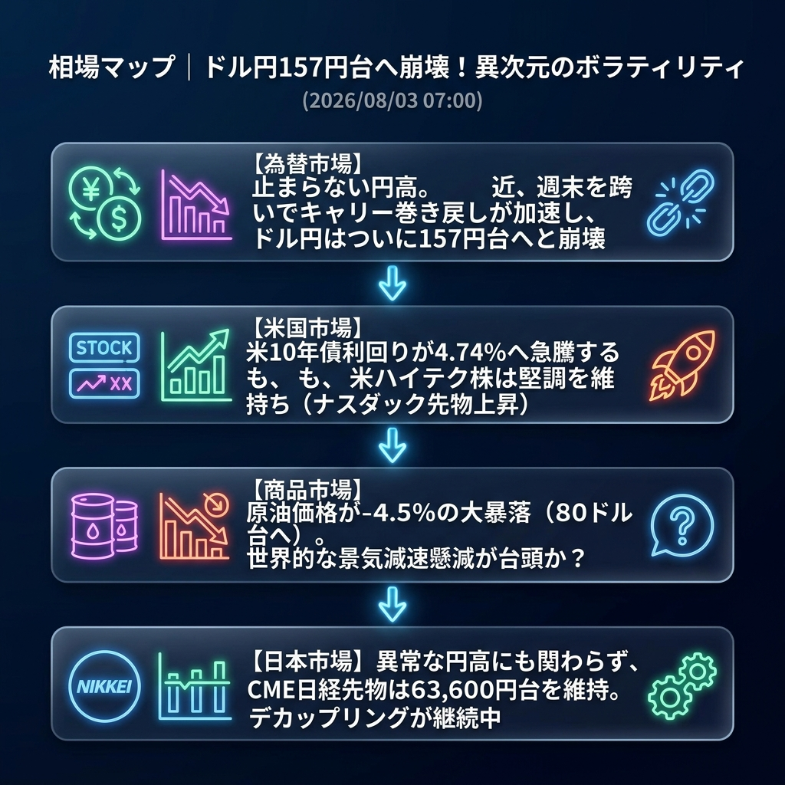

週明けの市場は、まさに「異次元のボラティリティ」に包まれています。週末を跨いでキャリートレードの巻き戻し（円の買い戻し）がさらに加速し、ドル円はついに157円台へと崩壊的な急落を見せました。
一方で、これほどの円高に見舞われながらも、日本株（CME日経先物）は63,600円台で驚異的な粘りを見せています。米10年債利回りが4.74%へと急騰しているにもかかわらず、米ハイテク株（ナスダック）が上昇しているという、既存のセオリーが全く通用しないカオスな相場環境に突入しています。
「止まらない円高（ドル円157円台）」と「セオリー崩壊のデカップリング相場」。
先週末のNY時間から今朝にかけて、最大のショックを引き起こしているのは「原油価格の暴落（-4.5%）」と「米金利の急騰（4.74%）」です。原油の暴落は世界的な景気減速（リセッション）への恐怖を連想させますが、なぜか株価（ナスダック）は買われるという非常にチグハグな動きです。
為替市場では、ドル円が160円割れのストップロスを巻き込みながらナイアガラのように落下し、一時157.60円台まで突っ込みました。日銀の利上げ観測や米国経済の減速懸念が入り混じり、投機筋が完全にポジションをひっくり返している状態です。
| 指数・銘柄 | 現在値 | 前回比（前週末比） | 騰落率 | 確認事項 |
|---|---|---|---|---|
| S&P 500 (ES=F) | 7,546.25 | +27.00 | +0.36% | 底堅い推移 |
| Nasdaq (NQ=F) | 28,559.75 | +155.50 | +0.55% | 金利高を無視して上昇 |
| Dow (YM=F) | 52,793.0 | +158.0 | +0.30% | 堅調 |
| 日経225現物 | 64,362.02 | 0.00 | 0.00% | 前週末大引け値 |
| CME日経225先物 | 63,685.0 | +415.0 | +0.66% | 円高を跳ね返し高値圏 |
| USD/JPY | 157.679 | -0.279 | +0.18% | 【暴落】157円台へ突入 |
| EUR/USD | 1.1549 | +0.0022 | +0.19% | ユーロ買い優勢 |
| 金 | 4,126.3 | +19.3 | +0.47% | 金利急騰でも買われる異変 |
| 原油 | 80.87 | -3.80 | -4.49% | 【大暴落】景気後退懸念か |
| BTCUSD | 63,479.29 | +716.87 | +1.14% | 株高に連動 |
週明けの東京市場は、非常に神経質かつ危険なスタートとなります。金曜日（先週末）に64,362円という歴史的暴騰を見せた日経平均ですが、本日は「157円台への円高進行」をどこまで無視できるかのチキンレースとなります。
寄り付きはCME先物に合わせて63,600円前後で始まるものの、輸出関連株を中心に強烈な利益確定売り（またはパニック売り）が降ってくるリスクが高く、寄り天（寄り付き直後が最高値）からの急反落に最大限の警戒が必要です。
東京市場オープン後、国内の機関投資家が「この円高は日本経済にとってプラス（輸入物価下落など）」という独自のポジティブ解釈を持ち出し、内需株を中心に猛烈に買い進めた場合。日経平均は円高をものともせず、金曜日の高値（64,362円）をあっさり更新していく「完全な狂乱相場」のシナリオとなります。